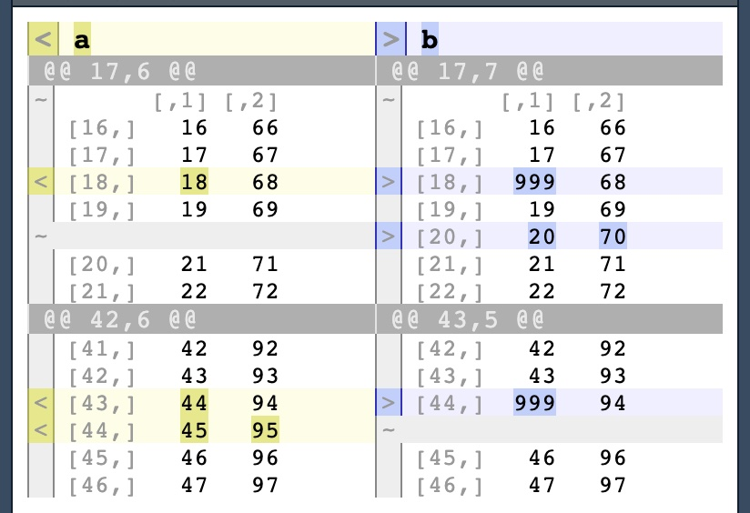

What’s the difference between two dfs?
diffobj::diffPrint() gives a handy visual way to check differences:
< a > b
@@ 17,6 @@ @@ 17,7 @@
~ [,1] [,2] ~ [,1] [,2]
[16,] 16 66 [16,] 16 66
[17,] 17 67 [17,] 17 67
< [18,] 18 68 > [18,] 999 68
[19,] 19 69 [19,] 19 69
~ > [20,] 20 70
[20,] 21 71 [21,] 21 71
[21,] 22 72 [22,] 22 72
@@ 42,6 @@ @@ 43,5 @@
[41,] 42 92 [42,] 42 92
[42,] 43 93 [43,] 43 93
< [43,] 44 94 > [44,] 999 94
< [44,] 45 95 ~
[45,] 46 96 [45,] 46 96
[46,] 47 97 [46,] 47 97
(In RStudio, this is shown in a colorful manner in the Viewer)
This also works for other types of objects, such as character vectors:
< letters[1:3] > c("a", "B", "..
@@ 1 @@ @@ 1 @@
< [1] "a" "b" "c" > [1] "a" "B" "c"
For more details, see the Introduction to diffobjj vignette, or the diffobj github rep.
Session info and package versions
─ Session info ───────────────────────────────────────────────────────────────
setting value
version R version 4.3.1 (2023-06-16)
os macOS Ventura 13.4.1
system aarch64, darwin20
ui X11
language (EN)
collate en_US.UTF-8
ctype en_US.UTF-8
tz America/Chicago
date 2023-06-25
pandoc 3.1.1 @ /Applications/RStudio.app/Contents/Resources/app/quarto/bin/tools/ (via rmarkdown)
─ Packages ───────────────────────────────────────────────────────────────────
package loadedversion date source
cli 3.6.1 2023-03-23 CRAN (R 4.3.0)
colorspace 2.1-0 2023-01-23 CRAN (R 4.3.0)
crayon 1.5.2 2022-09-29 CRAN (R 4.3.0)
diffobj 0.3.5 2021-10-05 CRAN (R 4.3.0)
digest 0.6.31 2022-12-11 CRAN (R 4.3.0)
dplyr 1.1.2 2023-04-20 CRAN (R 4.3.0)
ellipsis 0.3.2 2021-04-29 CRAN (R 4.3.0)
evaluate 0.21 2023-05-05 CRAN (R 4.3.0)
fansi 1.0.4 2023-01-22 CRAN (R 4.3.0)
fastmap 1.1.1 2023-02-24 CRAN (R 4.3.0)
forcats 1.0.0 2023-01-29 CRAN (R 4.3.0)
generics 0.1.3 2022-07-05 CRAN (R 4.3.0)
ggExtra 0.10.0 2022-03-23 CRAN (R 4.3.0)
ggplot2 3.4.2 2023-04-03 CRAN (R 4.3.0)
glue 1.6.2 2022-02-24 CRAN (R 4.3.0)
gtable 0.3.3 2023-03-21 CRAN (R 4.3.0)
hms 1.1.3 2023-03-21 CRAN (R 4.3.0)
htmltools 0.5.5 2023-03-23 CRAN (R 4.3.0)
htmlwidgets 1.6.2 2023-03-17 CRAN (R 4.3.0)
httpuv 1.6.11 2023-05-11 CRAN (R 4.3.0)
jsonlite 1.8.4 2022-12-06 CRAN (R 4.3.0)
knitr 1.43 2023-05-25 CRAN (R 4.3.0)
later 1.3.1 2023-05-02 CRAN (R 4.3.0)
lifecycle 1.0.3 2022-10-07 CRAN (R 4.3.0)
lubridate 1.9.2 2023-02-10 CRAN (R 4.3.0)
magrittr 2.0.3 2022-03-30 CRAN (R 4.3.0)
mime 0.12 2021-09-28 CRAN (R 4.3.0)
miniUI 0.1.1.1 2018-05-18 CRAN (R 4.3.0)
munsell 0.5.0 2018-06-12 CRAN (R 4.3.0)
pillar 1.9.0 2023-03-22 CRAN (R 4.3.0)
pkgconfig 2.0.3 2019-09-22 CRAN (R 4.3.0)
promises 1.2.0.1 2021-02-11 CRAN (R 4.3.0)
purrr 1.0.1 2023-01-10 CRAN (R 4.3.0)
R6 2.5.1 2021-08-19 CRAN (R 4.3.0)
Rcpp 1.0.10 2023-01-22 CRAN (R 4.3.0)
readr 2.1.4 2023-02-10 CRAN (R 4.3.0)
renv 0.17.3 2023-04-06 CRAN (R 4.3.0)
rlang 1.1.1 2023-04-28 CRAN (R 4.3.0)
rmarkdown 2.21 2023-03-26 CRAN (R 4.3.0)
rstudioapi 0.14 2022-08-22 CRAN (R 4.3.0)
scales 1.2.1 2022-08-20 CRAN (R 4.3.0)
sessioninfo 1.2.2 2021-12-06 CRAN (R 4.3.0)
shiny 1.7.4 2022-12-15 CRAN (R 4.3.0)
stringi 1.7.12 2023-01-11 CRAN (R 4.3.0)
stringr 1.5.0 2022-12-02 CRAN (R 4.3.0)
tibble 3.2.1 2023-03-20 CRAN (R 4.3.0)
tidyr 1.3.0 2023-01-24 CRAN (R 4.3.0)
tidyselect 1.2.0 2022-10-10 CRAN (R 4.3.0)
tidyverse 2.0.0 2023-02-22 CRAN (R 4.3.0)
timechange 0.2.0 2023-01-11 CRAN (R 4.3.0)
tzdb 0.3.0 2022-03-28 CRAN (R 4.3.0)
utf8 1.2.3 2023-01-31 CRAN (R 4.3.0)
vctrs 0.6.2 2023-04-19 CRAN (R 4.3.0)
withr 2.5.0 2022-03-03 CRAN (R 4.3.0)
xfun 0.39 2023-04-20 CRAN (R 4.3.0)
xtable 1.8-4 2019-04-21 CRAN (R 4.3.0)
yaml 2.3.7 2023-01-23 CRAN (R 4.3.0)